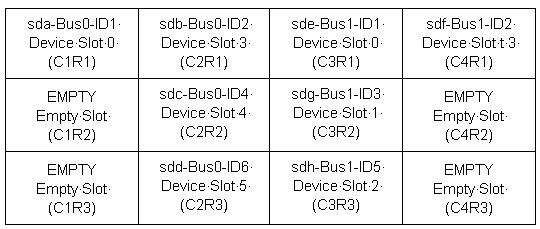
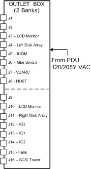
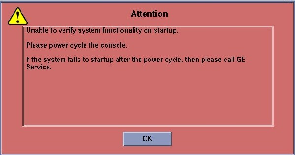
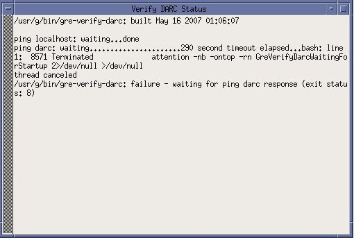
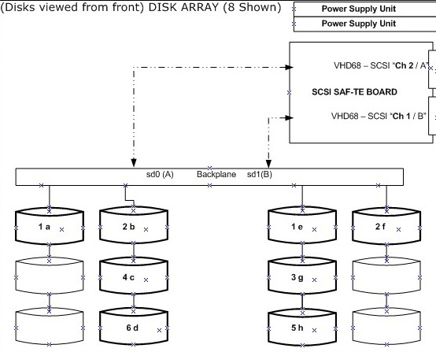

Operating Documentation
Direction 5193574-800, Rev# 22
LightSpeed 7.X Service Methods
Module Version 1.0, Version Date 4/2/08
Operating Documentation |
| Last revised: | 24 February 2008 |
07MW18.4 is the software version used to validate these commands.
| Command | Description | |
| [root@darc ~]# smartctl -a /dev/sd (where * = sda , sdb, through sdh)[root@darc ~]# smartctl -H /dev/sd*[root@darc ~]# smartctl -H /dev/sd* | grep OK | wc -l(if result is anything other than 1 - bad drive) | Verifies the “SMART Health Status” output for potential failing disk(s) in the Disk Array (JBOD). (See Section 21.) | |
rsh darc {ctuser@darc} sudo gre-raid -q | Apps Up or Down. Runs a performance test on the /raw_data filesystem if the file system is already mounted. A failure message is displayed if performance falls below the minimum configured threshold (no action is taken to stop the disk array, etc). Chassis layout is displayed. | |
rsh darc {ctuser@darc} sudo gre-raid -a | Apps Down ONLY. Starts and tests the RAID. | |
rsh darc {ctuser@darc} sudo gre-raid -s | Apps Down ONLY. Stops the RAID. | |
rsh darc {ctuser@darc} sudo gre-raid -c | Apps Down ONLY. Repartitions (creates) and starts the RAID. | |
rsh darc {ctuser@darc} sudo gre-raid -z -c then sudo gre-raid -a then sudo gre-raid -q | Apps Down ONLY. Used only when instructed to by Engineering or the OLC. This command removes the serial number of a bad disk. | |
| df -h /raw_data | Displays partition information and verifies that raw_data is mounted on dev/md0. | |
| [root@darc ~]# sg_map -i -x | Lists device information with /dev/sg (#) to /dev/sd (letter). Listing of the SCSI Bus devices seen by the VDARC, which currently consists of two controllers each with 4 disks and 1 nStor device located on the SAF-TE Board. | |
| [root@darc ~]# grep 'Curr: ' /proc/scsi/aic79xx/* | Lists DARC SCSI Controller 0 and 1 BIOS info. | |
rsh darc {ctuser@darc} cd /var/log grep -Hi transmission mess* | {ctuser@darc} then cd /var/log to view transmission errors, or [root@darc ~]# grep -Hi transmission /var/log/mess*. | |
rsh darc {ctuser@darc} cd /var/log grep -Hi Dump Card mess* | {ctuser@darc} then cd /var/log to view Dump Card errors, or [root@darc ~]# grep -Hi Dump Card /var/log/mess*. | |
| [root@darc] grep -i transmission /proc/scsi/aic79xx/{0,1} | Transmission error info for 0 and 1 for vdarc scsi. | |
| [root@darc] cd /var/log grep -Hic ‘transmission’ mess* | Shows number of times transmission errors have occurred. | |
| [root@darc] cd /var/log grep -Hic ‘Dump Card’ mess* | Shows number of times Dump Card State has occurred. | |
[root@darc ~] #sg_map -a [root@darc ~]# sg_map -sd | Lists /dev/sg# (letter) to /dev/ | |
| [root@darc ~]# dd if=/dev/sdx of=/dev/null | Lights a LED for each drive for the Disk Array. Reads data 1 character at a time. | |
| [root@darc ~]# dd if=/dev/zero bs 64M of /dev/sdx | Disk Array. Reads and writes a block size of data. | |
| [root@darc ~]# grep -ci direct /proc/scsi/scsi | Lists SCSI information. | |
| [root@darc ~]# cat /proc/scsi/scsi | Lists device information. | |
| [root@darc ~]# cat /proc/scsi/aic79xx/0 | Lists DARC SCSI Controller 0 info. | |
| [root@darc ~]# cat /proc/scsi/aic79xx/1 | Lists DARC SCSI Controller 1 info. | |
| [root@darc ~]# cat /proc/scsi/aic79xx/{0,1} | Lists DARC SCSI Controller info. | |
| [root@darc ~]# cat /proc/mdstat | ||
| [root@darc] safte-monitor -p | grep -I power | Displays if both power supplies are operational for the VCT Disk Array | |
| [root@darc] safte-monitor -p | grep -I fan | Displays if both fans are operational for the VCT Disk Array | |
| [root@darc] grep -ic nstor /proc/scsi/scsi | A return of #2 verifies the VDARC Node can see the VCT Disk Array. If not verify SCSI Cables may be suspect. | |
| [root@darc bin] /gre-file-perf -s 15 /raw_data | With Apps UP - should display success for the VCT Disk Array and properly created and assembled | |
| [root@darc] safte-monitor -p | grep "disk present" | [See following explanation.] | |
| {ctuser@hostname} tail -100f gesys_bay45.log & | ||
| {ctuser@hostname} slay tail |
Explanation of “disk present” output:
View the VCT Disk Array from the front.
| NOTE: | When a Disk drops out (sdc), the letters (sdc) will change from Bus 0 ID4 to Bus 0 ID6. Only the BUS and ID output shown by performing a SCSI command will remain the same. |

When troubleshooting the disk array, do not attempt to perform a hot swap. The disk is running at 10K RPM. Always HALT the console when performing cable or disk swapping. Without the HALT there is no guarantee that the Disk Array will recover properly. Perform the commands with Apps Down whenever possible. The only diagnostic command that should be performed with Apps Up is the query command: {ctuser@darc ~}$sudo gre-raid -q
sg_map -i -x
grep(spacebar)'Curr:(spacebar)'(spacebar)/proc/scsi/aic79xx/*
sudo gre-raid(spacebar)-a (Non-Destructive ASSEMBLE)
sudo gre-raid(spacebar)-q (Non-Destructive QUERY/MAP)
sudo gre-raid(spacebar)-c (Destructive CREATE REPARTITION)
sudo gre-raid(spacebar)-s (STOP - UNMOUNT)
There may be times the Disk Array gets into a confused state and cannot be corrected. This may be due to a disk not being seen for a moment during the LFC, or due to create/assemble/query commands being run. This confusion does not occur often, but when it does the -z command may be used in conjunction with another diagnostic command (usually -c to erase the disk serial number, then reassemble).
| NOTE: | Erase the Disk Array serial numbers. Be careful when using the -z command. If a disk continues to fail, replace it. You must assemble after the erase. |
{ctuser@darc ~}$sudo gre-raid -z -c
Then run:
{ctuser@darc ~}$sudo gre-raid -a
The term SCSI Generic (“sg”) applies to emulated SCSI devices. The following output is for an 8 Disk Array system. Notice that two channels and 8 disks plus two nStor devices are shown.
Check SCSI Bus HW detected at the VDARC Node as root@darc as follows:
Device Manufacturer Model# Revision /dev/sg0 /dev/sda SEAGATE ST373454LC 0002 [root@darc ~]# sg_map -i -x /dev/sg0 0 0 1 0 0 /dev/sda SEAGATE ST373454LC 0002 /dev/sg1 0 0 2 0 0 /dev/sdb SEAGATE ST373454LC 0002 /dev/sg2 0 0 4 0 0 /dev/sdc SEAGATE ST373454LC 0002 /dev/sg3 0 0 6 0 0 /dev/sdd SEAGATE ST373454LC 0002 /dev/sg4 0 0 15 0 3 nStor NexStor 4000S 2.02 SCSI Bus Adaptor CH 2 /dev/sg5 1 0 1 0 0 /dev/sde SEAGATE ST373454LC 0002 /dev/sg6 1 0 2 0 0 /dev/sdf SEAGATE ST373454LC 0002 /dev/sg7 1 0 3 0 0 /dev/sdg SEAGATE ST373454LC 0002 /dev/sg8 1 0 5 0 0 /dev/sdh SEAGATE ST373454LC 0002 /dev/sg9 1 0 15 0 3 nStor NexStor 4000S 2.02 SCSI Bus Adaptor CH 1
The following verification is performed to ensure that the VDARC Node BIOS screens have been setup properly. This check does not address the process for correcting an error. Certain BIOS setting issues may show up during gre-raid diagnostic output as “Unexpected Negotiated Parameters.”
Open a Unix shell (window) and login as root. The following example is for a 8 Disk Array. To change the DARC BIOS, see the Appendix for instructions.
{ctuser@hostname}: su (space) -
Enter <password>
[root@ hostname]# rsh (space) darc
Last login: Wed Jan 19 17:41:38 from oc
[root@darc ~]# grep 'Curr: ' /proc/scsi/aic79xx/*
/proc/scsi/aic79xx/0: Curr: 320.000MB/s transfers (160.000MHz DT|IU|QAS, 16bit )
/proc/scsi/aic79xx/0: Curr: 320.000MB/s transfers (160.000MHz DT|IU|QAS, 16bit )
/proc/scsi/aic79xx/0: Curr: 320.000MB /s transfers (160.000MHz DT|IU|QAS, 16bit )
/proc/scsi/aic79xx/0: Curr: 320.000MB /s transfers (160.000MHz DT|IU|QAS, 16bit )
/proc/scsi/aic79xx/0: Curr: 6.600MB/s transfers (16bit )
/proc/scsi/aic79xx/1: Curr: 320.000MB /s transfers (160.000MHz DT|IU|QAS, 16bit )
/proc/scsi/aic79xx/1: Curr: 320.000MB /s transfers (160.000MHz DT|IU|QAS, 16bit )
/proc/scsi/aic79xx/1: Curr: 320.000MB /s transfers (160.000MHz DT|IU|QAS, 16bit )
/proc/scsi/aic79xx/1: Curr: 320.000MB /s transfers (160.000MHz DT|IU|QAS, 16bit )
/proc/scsi/aic79xx/1: Curr: 6.600MB/s transfers (16bit )
{ctuser@hostname} rsh darc
Last login: Fri Nov 4 14:41:39 from oc
{ctuser@darc ~}$ sudo gre-raid -h
gre-raid: built Oct 18 2005 17:52:27
Usage: gre-raid <-a | -c | -q | -s> [ options ]
-a --assemble Assemble/start an existing disk array.
-c --create Create a new disk array with all valid drives.
-q --query Query disk array.
-s --stop Stop disk array.
-f --force Attempt force start of existing disk array.
-h --help Display this usage information.
-m --mfgtest Manufacturing test mode - fail if any warnings.
-v --verbose Display additional information.
{ctuser@darc ~}$ sudo gre-raid -a (Non-Destructive ASSEMBLE)
gre-raid: built Oct 18 2005 17:52:27
/dev/sd<x>: scanning disk array...done
Important: Verify that there are no “unexpected negotiated parameters” shown here.
Device Bus ID Mfg Model Fwrev Serial-number /dev/sda 0 1 SEAGATE ST373454LC 0002 3KP01Z6E00007518DNTZ /dev/sdb 0 2 SEAGATE ST373454LC 0002 3KP0T5B200007551QAAU /dev/sdc 0 4 SEAGATE ST373454LC 0002 3KP0N9FP00007547X70C /dev/sdd 0 6 SEAGATE ST373454LC 0002 3KP0LDTX000075471RBD /dev/sde 1 1 SEAGATE ST373454LC 0002 3KP0TZF000007551L0ZR /dev/sdf 1 2 SEAGATE ST373454LC 0002 3KP0MH8200007546P0J2 /dev/sdg 1 3 SEAGATE ST373454LC 0002 3KP0LPDS00007546P08W /dev/sdh 1 5 SEAGATE ST373454LC 0002 3KP0TM1F00007551BVZL dasType: VDAS_64 /usr/g/config/gre-raid-8.cfg: RAID-0 profile /raw_data: unmounting filesystem...done /dev/md0: stopping...done /var/log/messages: checking for SCSI errors...done /var/log/messages: 0 drive(s) found with SCSI errors found since last start /dev/sda: testing...52.4MB/sec...done /dev/sdb: testing...52.7MB/sec...done /dev/sdc: testing...52.8MB/sec...done /dev/sdd: testing...not_currently_used [Dropped out] /dev/sde: testing...52.8MB/sec...done /dev/sdf: testing...52.3MB/sec...done /dev/sdg: testing...Mon Jan 16 11:47:25 2006 fail_scsi_errors(1) [Failure] /dev/sdh: testing...52.7MB/sec...done /dev/md0: starting...done /dev/md0: RAID-0 active with (8) drives, 256k chunk size, and 493GB capacity /raw_data: mounting /dev/md0 filesystem...done /raw_data: testing...410.1MB/sec...done /raw_data: 0.5% used, 489.5GB avail gre-raid: success
{ctuser@darc ~}$ sudo gre-raid -s
gre-raid: built Oct 18 2005 17:52:27
/dev/sd<x>: scanning disk array...done
Device Bus ID Mfg Model Fwrev Serial-number
/dev/sda 0 1 SEAGATE ST373454LC 0002 3KP01Z6E00007518DNTZ
/dev/sdb 0 2 SEAGATE ST373454LC 0002 3KP0T5B200007551QAAU
/dev/sdc 0 4 SEAGATE ST373454LC 0002 3KP0N9FP00007547X70C
/dev/sdd 0 6 SEAGATE ST373454LC 0002 3KP0LDTX000075471RBD
/dev/sde 1 1 SEAGATE ST373454LC 0002 3KP0TZF000007551L0ZR
/dev/sdf 1 2 SEAGATE ST373454LC 0002 3KP0MH8200007546P0J2
/dev/sdg 1 3 SEAGATE ST373454LC 0002 3KP0LPDS00007546P08W
/dev/sdh 1 5 SEAGATE ST373454LC 0002 3KP0TM1F00007551BVZL
dasType: VDAS_64
/usr/g/config/gre-raid-8.cfg: RAID-0 profile
/raw_data: unmounting filesystem...done
/dev/md0: stopping...done
gre-raid: success
If the DARC SCSI BIOS "extended int 13 support for drives > 1GB" setting is disabled on either host controller, then gre-raid will fail to create/start the scan disk array (by design).
| NOTE: | SCSI controller settings for A and B “Sync Transfer Rate” should all be at 320 (not 160). |
Ideally this one-time procedure would be done before the LFC. Use Serial Over LAN (SOL) to reboot the VCT DARC Node and access the DARC SCSI setup.
With Application Software DOWN, open a Unix Shell:
[root@darc ~]# service cliservice start
Starting dpcproxy message or restarted dpcproxy message
[root@darc ~]# telnet localhost 623
[root@darc ~]# service cliservice start
Server: darc
Username: (press the enter/return key)
Password: (press the enter/return key)
At the dpccli prompt: reset
Ok
At the dpccli prompt: console
Press Ctrl-A (when message appears) to configure the SCSI BIOS. Message appears shortly after system BIOS display.
Press [Enter] to select AIC-7902 A at slot ##.
Press Configure/View SCSI Controller Settings.
Use down-arrow key to select SCSI Device Configuration.
Verify that the Sync Transfer Rate (MB/Sec) for all is set at 320.
If the Sync Transfer Rate (MB/Sec) is not set at 320, arrow to the value in need of change and press [Enter].
Use up arrow key to 320 and press [Enter], then arrow over and select Enter> for next change.
Verify that all (0 through 15) are set to 320.
Press [Esc] to leave the Configuration screen for AIC-7902 A.
Press [Esc] to leave this screen and return to AIC-7902 A at slot ## screen.
At the AIC-7902 A at slot ## screen:
Use the down-arrow key to select "Advanced Configuration" and press [Enter].
Use down-arrow key to select "Extended Int 13 Translation for DOS Drives > 1 GByte".
If setting is disabled, press [Enter] and select/enter "Enabled".
Press the [Esc] key twice to go up two levels: (AIC-7902A Configuration screen, then Save Changes Made?).
Select "Yes" to save changes.
Press the [Esc] key to get out of the options screen: Configure/View SCSI Controller Settings.
Press [Enter] to select AIC-7902 B at slot ##.
Press Configure/View SCSI Controller Settings.
Use down-arrow key to select SCSI Device Configuration.
Verify that the Sync Transfer Rate (MB/Sec) for all is set at 320.
If the Sync Transfer Rate (MB/Sec) is not set at 320, arrow to the value in need of change and press [Enter].
Use up arrow key to 320 and press [Enter], then arrow over and select Enter> for next change.
Verify that all (0 through 15) are set to 320.
Press [Esc] to leave the Configuration screen for AIC-7902 B.
Press [Esc] to leave this screen and return to AIC-7902 B at slot ## screen.
At the AIC-7902 B at slot ## screen, use the down-arrow key to select "Advanced Configuration" and press [Enter].
Use down-arrow key to select "Extended Int 13 Translation for DOS Drives > 1 GByte".
If setting is disabled, press [Enter] and select "Enabled".
Press [Esc] twice to go up two levels: (AIC-7902A Configuration screen then Save Changes Made?).
Select "Yes" to save changes.
Press [Esc] to get out of the options screen: Configure/View SCSI Controller Settings.
Press [Esc] to leave this screen and return to AIC A/B Selection Screen.
Press [Esc] to leave EXIT UTILITY? Use Arrow Key to select Yes, then press [Enter].
Shut down system and replace VDARC hardware.
Remove VCT Disk Array power (2) cords from the rear of the VCT Disk Array power supplies or turn off both (2) power supplies located at the rear of the Disk Array.
Boot system, stopping Application Software from coming up.
Load software media following instructions from the appropriate LFC procedure:
DARC OS
DARC Apps (ignore any Disk Array errors)
With Application Software down as ctuser, perform vrac_flash_update, answer "y".
As root, halt the system.
Attach VCT Disk Array (2) power cords to the rear of the VCT Disk Array power supplies or turn on both (2) power supplies located at the rear of the Disk Array.
Boot the system but stop APPS from coming up.
Assemble and query the Disk Array from the VDARC:
{ctuser@darc}: sudo gre-raid -a
{ctuser@darc}: sudo gre-raid -q
| NOTE: | After booting up, the images will reconstruct automatically. No data is lost. |
Lights each individual Disk Array Drive LED to identify it.
{ctuser@darc}$ dd if=/dev/sdl of=/dev/null
dd: opening `/dev/sdl': Permission denied
{ctuser@darc}$ must be root
[root@darc]# dd if=/dev/sda of=/dev/null
6962064+0 records in
6962064+0 records out
Select: Control-C to stop
[root@darc scripts]# dd if=/dev/sdb of=/dev/null
1201296+0 records in
1201296+0 records out
Select: Control-C to stop
[root@darc scripts]# CtrlC to stop
CtrlC: Command not found.
[root@darc scripts]# dd if=/dev/sdc of=/dev/null
8439440+0 records in
8439440+0 records out
Select: Control-C to stop
[root@darc scripts]# dd if=/dev/sdd of=/dev/null
2252688+0 records in
2252688+0 records out
Select: Control-C to stop [root@darc scripts]#
[root@darc scripts]# dd if=/dev/sde of=/dev/null
3380112+0 records in
3380112+0 records out
Select: Control-C to stop
[root@darc scripts]# dd if=/dev/sdf of=/dev/null
1484952+0 records in
1484952+0 records out
Select: Control-C to stop
[root@darc scripts]# dd if=/dev/sdg of=/dev/null
1434256+0 records in
1434256+0 records out
Select: Control-C to stop
[root@darc scripts]# dd if=/dev/sdh of=/dev/null
1785361+0 records in
1785361+0 records out
Select: Control-C to stop
{ctuser@darc ~}$ or [root@darc ~]# cat /proc/scsi/scsi
Attached devices:
Host: scsi0 Channel: 00 Id: 01 Lun: 00
Vendor: SEAGATE Model: ST373454LC Rev: 0002
Type: Direct-Access ANSI SCSI revision: 03
Host: scsi0 Channel: 00 Id: 02 Lun: 00
Vendor: SEAGATE Model: ST373454LC Rev: 0002
Type: Direct-Access ANSI SCSI revision: 03
Host: scsi0 Channel: 00 Id: 04 Lun: 00
Vendor: SEAGATE Model: ST373454LC Rev: 0002
Type: Direct-Access ANSI SCSI revision: 03
Host: scsi0 Channel: 00 Id: 06 Lun: 00
Vendor: SEAGATE Model: ST373454LC Rev: 0002
Type: Direct-Access ANSI SCSI revision: 03
Host: scsi0 Channel: 00 Id: 15 Lun: 00
Part of the SCSI Bus Adaptor - Channel 2
Vendor: nStor Model: NexStor 4000S Rev: 2.02
Not A Disk - should see nStor if flashed
Type: Processor ANSI SCSI revision: 02
Host: scsi1 Channel: 00 Id: 01 Lun: 00
Vendor: SEAGATE Model: ST373454LC Rev: 0002
Type: Direct-Access ANSI SCSI revision: 03
Host: scsi1 Channel: 00 Id: 02 Lun: 00
Vendor: SEAGATE Model: ST373454LC Rev: 0002
Type: Direct-Access ANSI SCSI revision: 03
Host: scsi1 Channel: 00 Id: 03 Lun: 00
Vendor: SEAGATE Model: ST373454LC Rev: 0002
Type: Direct-Access ANSI SCSI revision: 03
Host: scsi1 Channel: 00 Id: 05 Lun: 00
Vendor: SEAGATE Model: ST373454LC Rev: 0002
Type: Direct-Access ANSI SCSI revision: 03
Host: scsi1 Channel: 00 Id: 15 Lun: 00
Part of the SCSI Bus Adaptor - Channel 1
Vendor: nStor Model: NexStor 4000S Rev: 2.02
Not A Disk - should see nStor if flashed
Type: Processor ANSI SCSI revision: 02
{ctuser@hostname} rsh darc
Last login: Mon Nov 8 11:57:36 from oc
{ctuser@darc ~}$ cat /proc/scsi/aic79xx/0
Adaptec AIC79xx driver version: 1.3.11
Adaptec AIC7902 Ultra320 SCSI adapter
aic7902: Ultra320 Wide Channel A, SCSI Id=7, PCI-X 67-100Mhz, 512 SCBs
Allocated SCBs: 128, SG List Length: 128
Serial EEPROM:
0x17c8 0x17c8 0x17c8 0x17c8 0x17c8 0x17c8 0x17c8 0x17c8
0x17c8 0x17c8 0x17c8 0x17c8 0x17c8 0x17c8 0x17c8 0x17c8
0x09f4 0x0146 0x2807 0x0010 0xffff 0xffff 0xffff 0xffff
0xffff 0xffff 0xffff 0xffff 0xffff 0xffff 0x0430 0xb3f7
Target 0 Negotiation Settings
User: 320.000MB/s transfers (160.000MHz DT|IU|QAS, 16bit)
Target 1 Negotiation Settings
User: 320.000MB/s transfers (160.000MHz DT|IU|QAS, 16bit)
Goal: 320.000MB/s transfers (160.000MHz DT|IU|QAS, 16bit)
Curr: 320.000MB/s transfers (160.000MHz DT|IU|QAS, 16bit)
Transmission Errors 0
Channel A Target 1 Lun 0 Settings
Commands Queued 39
Commands Active 0
Command Openings 4
Max Tagged Openings 4
Device Queue Frozen Count 0
Target 2 Negotiation Settings
User: 320.000MB/s transfers (160.000MHz DT|IU|QAS, 16bit)
Goal: 320.000MB/s transfers (160.000MHz DT|IU|QAS, 16bit)
Curr: 320.000MB/s transfers (160.000MHz DT|IU|QAS, 16bit)
Transmission Errors 0
Channel A Target 2 Lun 0 Settings
Commands Queued 41
Commands Active 0
Command Openings 4
Max Tagged Openings 4
Device Queue Frozen Count 0
Target 3 Negotiation Settings
User: 320.000MB/s transfers (160.000MHz DT|IU|QAS, 16bit)
Goal: 320.000MB/s transfers (160.000MHz DT|IU|QAS, 16bit)
Curr: 320.000MB/s transfers (160.000MHz DT|IU|QAS, 16bit)
Transmission Errors 0
Channel A Target 3 Lun 0 Settings
Commands Queued 41
Commands Active 0
Command Openings 4
Max Tagged Openings 4
Device Queue Frozen Count 0
Target 4 Negotiation Settings
User: 320.000MB/s transfers (160.000MHz DT|IU|QAS, 16bit)
Goal: 320.000MB/s transfers (160.000MHz DT|IU|QAS, 16bit)
Curr: 320.000MB/s transfers (160.000MHz DT|IU|QAS, 16bit)
Transmission Errors 0
Channel A Target 4 Lun 0 Settings
Commands Queued 41
Commands Active 0
Command Openings 4
Max Tagged Openings 4
Device Queue Frozen Count 0
Target 5 Negotiation Settings
User: 320.000MB/s transfers (160.000MHz DT|IU|QAS, 16bit)
Goal: 320.000MB/s transfers (160.000MHz DT|IU|QAS, 16bit)
Curr: 320.000MB/s transfers (160.000MHz DT|IU|QAS, 16bit)
Transmission Errors 0
Channel A Target 5 Lun 0 Settings
Commands Queued 41
Commands Active 0
Command Openings 4
Max Tagged Openings 4
Device Queue Frozen Count 0
Target 6 Negotiation Settings
User: 320.000MB/s transfers (160.000MHz DT|IU|QAS, 16bit)
Goal: 320.000MB/s transfers (160.000MHz DT|IU|QAS, 16bit)
Curr: 320.000MB/s transfers (160.000MHz DT|IU|QAS, 16bit)
Transmission Errors 0
Channel A Target 6 Lun 0 Settings
Commands Queued 41
Commands Active 0
Command Openings 4
Max Tagged Openings 4
Device Queue Frozen Count 0
Target 7 Negotiation Settings
User: 320.000MB/s transfers (160.000MHz DT|IU|QAS, 16bit)
Target 8 Negotiation Settings
User: 320.000MB/s transfers (160.000MHz DT|IU|QAS, 16bit)
Target 9 Negotiation Settings
User: 320.000MB/s transfers (160.000MHz DT|IU|QAS, 16bit)
Target 10 Negotiation Settings
User: 320.000MB/s transfers (160.000MHz DT|IU|QAS, 16bit)
Target 11 Negotiation Settings
User: 320.000MB/s transfers (160.000MHz DT|IU|QAS, 16bit)
Target 12 Negotiation Settings
User: 320.000MB/s transfers (160.000MHz DT|IU|QAS, 16bit)
Target 13 Negotiation Settings
User: 320.000MB/s transfers (160.000MHz DT|IU|QAS, 16bit)
Target 14 Negotiation Settings
User: 320.000MB/s transfers (160.000MHz DT|IU|QAS, 16bit)
Target 15 Negotiation Settings
User: 320.000MB/s transfers (160.000MHz DT|IU|QAS, 16bit)
Goal: 6.600MB/s transfers (16bit)
Curr: 6.600MB/s transfers (16bit)
Transmission Errors 0
Channel A Target 15 Lun 0 Settings
Commands Queued 32755
Commands Active 0
Command Openings 1
Max Tagged Openings 0
Device Queue Frozen Count 0
{ctuser@darc ~}
{ctuser@darc ~} cat /proc/scsi/aic79xx/1
Adaptec AIC79xx driver version: 1.3.11
Adaptec AIC7902 Ultra320 SCSI adapter
aic7902: Ultra320 Wide Channel B, SCSI Id=7, PCI-X 67-100Mhz, 512 SCBs
Allocated SCBs: 128, SG List Length: 128
Serial EEPROM:
0x17c8 0x17c8 0x17c8 0x17c8 0x17c8 0x17c8 0x17c8 0x17c8
0x17c8 0x17c8 0x17c8 0x17c8 0x17c8 0x17c8 0x17c8 0x17c8
0x09f4 0x0146 0x2807 0x0010 0xffff 0xffff 0xffff 0xffff
0xffff 0xffff 0xffff 0xffff 0xffff 0xffff 0x0430 0xb3f7
Target 0 Negotiation Settings
User: 320.000MB/s transfers (160.000MHz DT|IU|QAS, 16bit)
Target 1 Negotiation Settings
User: 320.000MB/s transfers (160.000MHz DT|IU|QAS, 16bit)
Goal: 320.000MB/s transfers (160.000MHz DT|IU|QAS, 16bit)
Curr: 320.000MB/s transfers (160.000MHz DT|IU|QAS, 16bit)
Transmission Errors 0
Channel A Target 1 Lun 0 Settings
Commands Queued 41
Commands Active 0
Command Openings 4
Max Tagged Openings 4
Device Queue Frozen Count 0
Target 2 Negotiation Settings
User: 320.000MB/s transfers (160.000MHz DT|IU|QAS, 16bit)
Goal: 320.000MB/s transfers (160.000MHz DT|IU|QAS, 16bit)
Curr: 320.000MB/s transfers (160.000MHz DT|IU|QAS, 16bit)
Transmission Errors 0
Channel A Target 2 Lun 0 Settings
Commands Queued 41
Commands Active 0
Command Openings 4
Max Tagged Openings 4
Device Queue Frozen Count 0
Target 3 Negotiation Settings
User: 320.000MB/s transfers (160.000MHz DT|IU|QAS, 16bit)
Goal: 320.000MB/s transfers (160.000MHz DT|IU|QAS, 16bit)
Curr: 320.000MB/s transfers (160.000MHz DT|IU|QAS, 16bit)
Transmission Errors 0
Channel A Target 3 Lun 0 Settings
Commands Queued 41
Commands Active 0
Command Openings 4
Max Tagged Openings 4
Device Queue Frozen Count 0
Target 4 Negotiation Settings
User: 320.000MB/s transfers (160.000MHz DT|IU|QAS, 16bit)
Goal: 320.000MB/s transfers (160.000MHz DT|IU|QAS, 16bit)
Curr: 320.000MB/s transfers (160.000MHz DT|IU|QAS, 16bit)
Transmission Errors 0
Channel A Target 4 Lun 0 Settings
Commands Queued 41
Commands Active 0
Command Openings 4
Max Tagged Openings 4
Device Queue Frozen Count 0
Target 5 Negotiation Settings
User: 320.000MB/s transfers (160.000MHz DT|IU|QAS, 16bit)
Goal: 320.000MB/s transfers (160.000MHz DT|IU|QAS, 16bit)
Curr: 320.000MB/s transfers (160.000MHz DT|IU|QAS, 16bit)
Transmission Errors 0
Channel A Target 5 Lun 0 Settings
Commands Queued 41
Commands Active 0
Command Openings 4
Max Tagged Openings 4
Device Queue Frozen Count 0
Target 6 Negotiation Settings
User: 320.000MB/s transfers (160.000MHz DT|IU|QAS, 16bit)
Goal: 320.000MB/s transfers (160.000MHz DT|IU|QAS, 16bit)
Curr: 320.000MB/s transfers (160.000MHz DT|IU|QAS, 16bit)
Transmission Errors 0
Channel A Target 6 Lun 0 Settings
Commands Queued 41
Commands Active 0
Command Openings 4
Max Tagged Openings 4
Device Queue Frozen Count 0
Target 7 Negotiation Settings
User: 320.000MB/s transfers (160.000MHz DT|IU|QAS, 16bit)
Target 8 Negotiation Settings
User: 320.000MB/s transfers (160.000MHz DT|IU|QAS, 16bit)
Target 9 Negotiation Settings
User: 320.000MB/s transfers (160.000MHz DT|IU|QAS, 16bit)
Target 10 Negotiation Settings
User: 320.000MB/s transfers (160.000MHz DT|IU|QAS, 16bit)
Target 11 Negotiation Settings
User: 320.000MB/s transfers (160.000MHz DT|IU|QAS, 16bit)
Target 12 Negotiation Settings
User: 320.000MB/s transfers (160.000MHz DT|IU|QAS, 16bit)
Target 13 Negotiation Settings
User: 320.000MB/s transfers (160.000MHz DT|IU|QAS, 16bit)
Target 14 Negotiation Settings
User: 320.000MB/s transfers (160.000MHz DT|IU|QAS, 16bit)
Target 15 Negotiation Settings
User: 320.000MB/s transfers (160.000MHz DT|IU|QAS, 16bit)
Goal: 6.600MB/s transfers (16bit)
Curr: 6.600MB/s transfers (16bit)
Transmission Errors 0
Channel A Target 15 Lun 0 Settings
Commands Queued 32779
Commands Active 0
Command Openings 1
Max Tagged Openings 0
Device Queue Frozen Count 0B (TOP) is Controller 1 and goes to the right side of the Disk Array, assuming that all 8 disks are seen. The letters are as follows. The numbers listed always stay the same. Lettering sometimes changes due to drop-out.
| 1(e) | 2(f) |
| 3(g) | empty |
| 5(h) | empty |
A (BOTTOM) is Controller 0 and goes to the left side of the Disk Array, assuming that all 8 disks are seen. The letters are as follows. The numbers listed always stay the same.
| 1(a) | 2(b) |
| empty | 4(C) |
| empty | 6(D) |
Run the Query / Assemble commands as needed to isolate a faulty side.
After a side is isolated, mark that specific Ultra320 SCSI Cable as failed.
Halt the system and swap the Ultra320 SCSI Cables.
Ensure that both ends are swapped.
Restart the system and stop apps from starting. See if the fault follows the Ultra320 SCSI Cable or remains on the original failing side.
Note any failing drives. Mark all drives with their original location.
Note any failing drives and mark them appropriately as well with fail??. A failing drive on one side will show an error, while the other side must DROP-OUT a drive and usually states not currently used. The DROPPED-OUT Drive is not a failure.
Restart the system (via Halt) and stop Apps from starting. If a drive is actually failing there is no other work around--all data will be lost.
| NOTE: | We can now attempt to see if the failure follows the drives or stays with the VDARC. |
As ctuser on the darc: sudo gre-raid -s then HALT.

The following verification is performed to ensure that the VDARC Node BIOS screens have been setup properly. This check does not address the process for correcting an error. Certain BIOS setting issues may show up during gre-raid diagnostic output as “Unexpected Negotiated Parameters."
1. Open a Unix shell and login as root. The following example is for an 8 Disk Array.
2. Change the DARC Node SCSI BIOS.
{ctuser@hostname}: su (space) -
Enter <password>
[root@ hostname]# rsh (space) darc
Last login: Wed Jan 19 17:41:38 from oc
[root@darc ~]# grep(space) 'Curr: ' (space) /proc/scsi/aic79xx/*
/proc/scsi/aic79xx/0: Curr: 320.000MB/s transfers (160.000MHz DT|IU|QAS, 16bit )
/proc/scsi/aic79xx/0: Curr: 320.000MB/s transfers (160.000MHz DT|IU|QAS, 16bit )
/proc/scsi/aic79xx/0: Curr: 320.000MB /s transfers (160.000MHz DT|IU|QAS, 16bit )
/proc/scsi/aic79xx/0: Curr: 320.000MB /s transfers (160.000MHz DT|IU|QAS, 16bit )
/proc/scsi/aic79xx/0: Curr: 6.600MB/s transfers (16bit )
/proc/scsi/aic79xx/1: Curr: 320.000MB /s transfers (160.000MHz DT|IU|QAS, 16bit )
/proc/scsi/aic79xx/1: Curr: 320.000MB /s transfers (160.000MHz DT|IU|QAS, 16bit )
/proc/scsi/aic79xx/1: Curr: 320.000MB /s transfers (160.000MHz DT|IU|QAS, 16bit )
/proc/scsi/aic79xx/1: Curr: 320.000MB /s transfers (160.000MHz DT|IU|QAS, 16bit )
/proc/scsi/aic79xx/1: Curr: 6.600MB/s transfers (16bit )
| NOTE: | Auto console tests may not be available at your site. |
started on: 2005-12-01 20:19:49
----Number of Iterations: 3----
Starting to run the Disk Array diagnostic...
Each iteration of this diagnostic will take a maximum of 5
minutes to complete.
3 iterations were selected.
====================================================
Iteration 1 of 3 starting...
Performing rsh to DARC...
OK.
Successful rsh to DARC
Checking for disk array...
Checking power supply...
----------------------------------------------------------
Error: Disk Array power supply is not functional.
supply 0 (right): 0
supply 1 (left) : -1
One or more disk array power supplies are not functional.
1. Visually verify switches and LEDs
Expected: ' 0
,-1
'
Actual : ' power supply 0 is okay and on
power supply 1 is malfunctioning and commanded on
power supply 0 is okay and on
power supply 1 is malfunctioning and commanded on '
----------------------------------------------------------
supply 0 (right): 0
supply 1 (left) : -1
One or more disk array power supplies are not functional.
1. Visually verify switches and LEDs
Status= -202
Checking cooling fans...
Checking scsi data cables...
Checking raid...
Checking raid configuration...
Checking raid partition...
Error: iteration 1 of 3 failed.
1 0
====================================================
| NOTE: | Auto console tests may not be available at your site. |
----Starting Disk Array Test----
started on: 2005-12-01 20:25:26
----Number of Iterations: 3----
Starting to run the Disk Array diagnostic...
Each iteration of this diagnostic will take a maximum of 5
minutes to complete.
3 iterations were selected.
====================================================
Iteration 1 of 3 starting...
Performing rsh to DARC...
OK.
Successful rsh to DARC
Checking for disk array...
Checking power supply...
Checking cooling fans...
Checking scsi data cables...
----------------------------------------------------------
Error: SCSI data cable is not correct.
Expected: ' 1245 '
Actual : ' 12 '
----------------------------------------------------------
Status= -204
Checking raid...
----------------------------------------------------------
Error: Raid response was not acceptable
Possible failing hard disk
Expected: ' gre-raid: success '
Actual : ' /usr/g/bin/gre-raid: built Nov 18 2005 00:02:09
/dev/sd<x>: scanning disk array...done
Device Bus ID Mfg Model Fwrev Serial-number
/dev/sda 0 1 SEAGATE ST373454LC 0002 3KP0JFYM00007544YWYG
/dev/sdb 0 2 SEAGATE ST373454LC 0002 3KP0J9AM000075469UDS
/dev/sdc 0 4 SEAGATE ST373454LC 0002 3KP1BWYW00007609AFH4
/dev/sdd 0 6 SEAGATE ST373454LC 0002 3KP0JL2Z00007609JCBK
dasType: VDAS_64
/usr/g/config/gre-raid-8.cfg: RAID-0 profile
/var/log/messages: checking for SCSI errors...done
/var/log/messages: 0 drive(s) found with SCSI errors found since last start
/dev/sda: testing...53.1MB/sec...not_currently_used
/dev/sdb: testing...52.9MB/sec...not_currently_used
/dev/sdc: testing...52.6MB/sec...not_currently_used
/dev/sdd: testing...52.8MB/sec.../dev/md0: not enough valid hard drives - bus0(4),
us1(0)
/dev/md0: unable to create a new disk array
not_currently_used
Disk Array Chassis Layout - Configured
|===============================================|
| [DRIVE] | [DRIVE] | [DRIVE] | [DRIVE] |
|===============================================|
| <empty> | [DRIVE] | [DRIVE] | <empty> |
|===============================================|
| <empty> | [DRIVE] | [DRIVE] | <empty> |
|===============================================|
Disk Array Chassis Layout - Current
|===============================================|
| sda: pass | sdb: pass | <empty> | <empty> |
|===============================================|
| <empty> | sdc: pass | <empty> | <empty> |
|===============================================|
| <empty> | sdd: pass | <empty> | <empty> |
|===============================================|
Please compare the current chassis layout with the
configured chassis layout and verify the following:
- hard drives are in configured slot locations
- SCSI cables are not reversed
/raw_data: testing...Input/output error:/raw_data/gre-raid-test/gre-00003: Input/ou
put error
Input/output error:/raw_data/gre-raid-test/gre-00004: Input/output error
Input/output error:/raw_data/gre-raid-test/gre-00005: Input/output error
Input/output error:/raw_data/gre-raid-test/gre-00006: Input/output error
Input/output error:/raw_data/gre-raid-test/gre-00007: Input/output error
Input/output error:/raw_data/gre-raid-test/gre-00008: Input/output error
Input/output error:/raw_data/gre-raid-test/gre-00009: Input/output error
Input/output error:/raw_data/gre-raid-test/gre-00010: Input/output error
Input/output error:/raw_data/gre-raid-test/gre-00011: Input/output error
Input/output error:/raw_data/gre-raid-test/gre-00012: Input/output error
Input/output error:/raw_data/gre-raid-test/gre-00013: Input/output error
open file failed
/raw_data: testing...Input/output error:/raw_data/gre-raid-test/gre-00014: Input/ou
put error
open file failed
/raw_data: testing...
gre-raid: failure - RAID performance below minimum (exit status: 33)
open file failed '
----------------------------------------------------------
Status= -205
Checking raid configuration...
----------------------------------------------------------
Error: Raid configuration response was not acceptable
Disk array has changed since the last create command.
Expected: ' gre-raid: success '
Actual : ' /usr/g/bin/gre-raid: built Nov 18 2005 00:02:09
/dev/sd<x>: scanning disk array...done
Device Bus ID Mfg Model Fwrev Serial-number
/dev/sda 0 1 SEAGATE ST373454LC 0002 3KP0JFYM00007544YWYG
/dev/sdb 0 2 SEAGATE ST373454LC 0002 3KP0J9AM000075469UDS
/dev/sdc 0 4 SEAGATE ST373454LC 0002 3KP1BWYW00007609AFH4
/dev/sdd 0 6 SEAGATE ST373454LC 0002 3KP0JL2Z00007609JCBK
dasType: VDAS_64
/usr/g/config/gre-raid-8.cfg: RAID-0 profile
/var/log/messages: checking for SCSI errors...done
/var/log/messages: 0 drive(s) found with SCSI errors found since last start
/dev/sda: testing...53.0MB/sec...not_currently_used
/dev/sdb: testing...52.9MB/sec...not_currently_used
/dev/sdc: testing...53.2MB/sec...not_currently_used
/dev/sdd: testing...52.7MB/sec.../dev/md0: not enough valid hard drives - bus0(4),
us1(0)
/dev/md0: unable to create a new disk array
not_currently_used
Disk Array Chassis Layout - Configured
|===============================================|
| [DRIVE] | [DRIVE] | [DRIVE] | [DRIVE] |
|===============================================|
| <empty> | [DRIVE] | [DRIVE] | <empty> |
|===============================================|
| <empty> | [DRIVE] | [DRIVE] | <empty> |
|===============================================|
Disk Array Chassis Layout - Current
|===============================================|
| sda: pass | sdb: pass | <empty> | <empty> |
|===============================================|
| <empty> | sdc: pass | <empty> | <empty> |
|===============================================|
| <empty> | sdd: pass | <empty> | <empty> |
|===============================================|
Please compare the current chassis layout with the
configured chassis layout and verify the following:
- hard drives are in configured slot locations
- SCSI cables are not reversed
/raw_data: testing...
gropen file failed
/raw_data: testing...open file failed
/raw_data: testing...e-raid: failure - RAID performance below minimum (exit status:
33)
open file failed '
----------------------------------------------------------
Status= -206
Checking raid partition...
Checking raid performance...
----------------------------------------------------------
Error: Raid performance response was not acceptable
Expected: ' Success '
Actual : ' /usr/g/bin/gre-file-perf: built Nov 18 2005 00:01:56
Generating random test pattern buffer...gre-file-perf.cpp(181) in WriteTestFile():
pen() - /raw_data/gre-raid-test/gre-00000 - "Input/output error (5)"
done
Writing file data...
MB/sec % Used GBytes MinPerfCnt
Failed.
'
----------------------------------------------------------
Status= -208
Error: iteration 1 of 3 failed.
1 0
====================================================
| NOTE: | Auto console tests may not be available at your site. |
########################################################################
"become root
"rsh darc..."
########################################################################
"Checking for disk array..."
cmd = grep -ic nstor /proc/scsi/scsi
expResult = "2"
Unexpected result:
ErrorReport: "Can't detect the disk array"
1. Verify the Disk Array is connected, VDARC SW is loaded; power switches are on.
########################################################################
"Checking power supply..."
cmd = safte-monitor -p | grep -i power
expResult1 = "power supply 0 is okay and on"
expResult2 = "power supply 1 is okay and on"
Unexpected result:
"One or more disk array power supplies are not functional."
1. Visually verify switches and LEDs"
ErrorReport: "Disk Array power supply is not functional."
########################################################################
"Checking cooling fans..."
cmd = safte-monitor -p |grep -i fan
cmd = safte-monitor -p |grep -i fan |grep -i operational
expResult1 = "fan 0 is operational"
expResult2 = "fan 1 is operational"
Unexpected result:
ErrorReport "Cooling is not functional."
########################################################################
"Checking scsi data cables..."
cmd = safte-monitor -p | awk ‘$5==”not” {printf $3}’
expResult = "1245"
Unexpected result:
"SCSI data cable is not correct."
if result == "4512": OperatorMsg: "SCSI cables are inverted. Correct and retest."
Are either 12 or 45 missing? Then VDARC cannot see one of the Channels on the Disk Array. Halt system and swap cables to see if failure follows the cable.
Is there more present than just 1245? Halt - then try reseating the drives and re-run.
cmd = safte-monitor -p | grep “disk present”
########################################################################
"Checking raid.query…"
cmd = cd usr/g/bin gre-raid -q
{ctuser@darc}sudo gre-raid -q | egrep -i “(fail | unexpected)”
NOTE: There should be no fail or unexpected text
"fail_scsi_errors"
"Unexpected negotiated"
expResult = "gre-raid: success"
Unexpected results:
"Raid response indicated an error"
"The device name of the failing drive should be listed above."
"To determine the disk to replace, run this command on the darc: gre-raid -q and find the device name that matches the output above."
"SCSI BIOS set incorrectly. Replace DARC or manually set SCSI BIOS correctly if unexpected messaging appears."
"Unknown disk fault. "Raid response was not acceptable" Possible failing hard disk"
Call OLC for support"
########################################################################
"Checking raid via query command..."
cmd = cd usr/g/bin gre-raid -q
expResult = "gre-raid: success"
Unexpected result:
"Raid configuration response was not acceptable"
"Disk array has changed since the last create command."
########################################################################
"Checking raid partition..."
cmd = df /raw_data
expResult = "raw_data"
expResult = RaidPartitionIsOk():
Unexpected result:
"Raid partition response was not acceptable"
########################################################################
"Checking raid performance..."
cmd = cd /usr/g/bin gre-file-perf -s 15 /raw_data
expResult = RaidPerfIsOk
expResult = "Success"
Unexpected result:
"Raid performance response was not acceptable"
################################################
Determine product type from HOST
cmd = swhwinfo -d
expResult = "VDAS"
If 'VDAS' is in the DAS type then it must be a VCT scanner
print "Product type is VCT"
########################################################################
The GOC5 VCT Operator Console is turned on or rebooted. At this point the VDARC Node is seen as RUNNING per the “ifconfig” command from the Host. The command “ping darc” fails. When the Application Software is started the VDARC Node fails to boot.
An Attention Box (Illustration 1) will pop-up stating that the Host is “Unable to verify system functionality on startup.”
Illustration 1: Attention Box

When OK is selected the user may notice the following “Verify DARC Status” window (Illustration 2). The gre-verify-darc process has failed because the VDARC cannot boot.
Illustration 2: Verify DARC Status Screen

The Operator Console Application Startup will attempt to recover. In the start-up Unix shell the following ipmitool messages will appear and attempt to turn off and then on the VDARC Node for a recovery process, however, this recovery will fail.
*********** starting the LightSpeed system *********** Attentioninfo - ipmitool -H darc -P "" chassis power off Chassis Power Control: Down/Off info - ipmitool -H darc -P "" chassis power on Chassis Power Control: Up/On |
If the gesyslog is accessed (example shown below), the user will see the gre-verify-darc failure message shown immediately below.
{ctuser@hostname} cd /usr/g/service/log
{ctuser@hostname} ls ge*
gesys_bay45.log gesys_bay45.log.05.22.2007.14.55.56.Z
{ctuser@hostname} tail -100f gesys_bay45.log &
1181044312 0 1 Tue Jun 5 11:51:52 2007 290014004 4
bay45 gre-verify-darc
gre-verify-darc.cpp 180
Unable to verify DARC system startup.
/usr/g/bin/gre-verify-darc: failure - waiting for ping darc response (exit status: 8)
|
| NOTE: | To perform a slay process if two gesys logs are opened,
perform the following (substituting site info for “XXXXX”): {ctuser@hostname} slay tail 8301 tail -100f gesys_XXXXX.log (y/n) [n] ?y 8797 tail -100f gesys_XXXXX.log (y/n) [n] ? {ctuser@hostname} |
Perform the telnet command as follows:
At the Toolchest, with Application software down, open a Unix Shell.
Verify another telnet window from the Host to the VDARC Node has not already been opened.
Perform the telnet command to the VDARC Node from the Host Computer:
{ctuser@hostname}su -
Password:<password>
[root@hostname]service cliservice start
dpcproxy server will be reported as already running or restarted
[root@hostname]telnet localhost 623
Trying 127.0.0.1...
Connected to localhost.
*** Indicates cliservice proxy server is running ***
Escape character is <^>.
Server: darc
Username:<Enter>
Password:<Enter>
Login successful
dpccli> reset
OK
dpccli> console
If a VCT Disk Array (JBOD) failure is causing the VDARC Node to stop the booting process, the user identifies the failure as follows:
If the booting process stops, the console window prompts the user to press any key to continue.
The user presses a key to allow the VCT Disk Array to display the failure as in this example:
Drive 2 on adaptor 0 is predicting future failure. Sense Qualifier is 00h. Press any key to continue....
The user records the failure.
The user presses any key to continue the VDARC Node boot process.
An example of a failing drive is provided below. Verify the “SMART Health Status” output:
[root@darc ~]# smartctl -a /dev/sda
smartctl version 5.33 [i386-redhat-linux-gnu] Copyright (C) 2002-4 Bruce Allen
Home page is http://smartmontools.sourceforge.net/
Device: SEAGATE ST373454LC Version: 0002
Serial number: 3KP42LBG000097177EB5
Device type: disk
Transport protocol: Parallel SCSI (SPI-4)
Local Time is: Tue Jun 5 12:28:29 2007 CDT
Device supports SMART and is Enabled
Temperature Warning Enabled
SMART Health Status: FAILURE PREDICTION THRESHOLD EXCEEDED
[asc=5d,ascq=0]
Current Drive Temperature: 34 C
Drive Trip Temperature: 68 C
Vendor (Seagate) cache information
Blocks sent to initiator = 98388816
Blocks received from initiator = 396302262
Blocks read from cache and sent to initiator = 44535918
Number of read and write commands whose size <= segment size = 1773227
Number of read and write commands whose size > segment size = 12370
Error counter log:
Errors Corrected by Total Correction Gigabytes Tot al
EEC rereads/ errors algorithm processed unc orrected
fast | delayed rewrites corrected invocations [10^9 bytes] err ors
read: 165662 15 8 165685 1184447 116.801 0
write: 0 0 0 0 0 195.450 0
Non-medium error count: 62
Error Events logging not supported
[GLTSD (Global Logging Target Save Disable) set. Enable Save with '-S on']
SMART Self-test log
Num Test Status segment LifeTime LBA_first_err [ SK ASC ASQ]
Description number (hours)
# 1 Background long Failed in segment --> - 960 0x 6c32368 [ 0x3 0x11 0x0]
# 2 Background short Completed - 960 - [ - - -]
Long (extended) Self Test duration: 1150 seconds [19.2 minutes]
An example of a passing drive is provided below. Verify the “SMART Health Status” output:
[root@darc ~]# smartctl -a /dev/sdb
smartctl version 5.33 [i386-redhat-linux-gnu] Copyright (C) 2002-4 Bruce Allen
Home page is http://smartmontools.sourceforge.net/
Device: SEAGATE ST373454LC Version: 0002
Serial number: 3KP3NQW0000097089GZ9
Device type: disk
Transport protocol: Parallel SCSI (SPI-4)
Local Time is: Tue Jun 5 12:28:44 2007 CDT
Device supports SMART and is Enabled
Temperature Warning Enabled
SMART Health Status: OK
Current Drive Temperature: 40 C
Drive Trip Temperature: 68 C
Vendor (Seagate) cache information
Blocks sent to initiator = 988796
Blocks received from initiator = 45181853
Blocks read from cache and sent to initiator = 182708
Number of read and write commands whose size <= segment size = 78535
Number of read and write commands whose size > segment size = 194
Error counter log:
Errors Corrected by Total Correction Gigabytes Total
EEC rereads/ errors algorithm processed uncorrected
fast | delayed rewrites corrected invocations [10^9 bytes] errors
read: 1647 0 0 1647 1647 1.462 0write: 0 0 0 0 0 58.052 0
Non-medium error count: 0
Error Events logging not supported
[GLTSD (Global Logging Target Save Disable) set. Enable Save with '-S on']
No self-tests have been logged
Long (extended) Self Test duration: 1150 seconds [19.2 minutes]
[root@darc ~]#
A SMART issue you may encounter is when you find that the BIOS reports a problem with "Drive X on adapter Y," but when you swap Drive X it doesn't fix the problem. Chances are the documented mapping for the Adaptor/Controller does not match the reported mapping due to differences in the BIOS. (See Illustration 3.) In all likelihood, the mapping has been documented from the Host OS point of view. If Linux starts counting buses, channels, and luns at zero, but the BIOS or the SCSI adapter starts counting them at one, that would account for this discrepancy.
Currently several drives have been identified with the following failure message:
FAILURE PREDICTION THRESHOLD EXCEEDED [asc=5d,ascq=0]
unrecovered read error: "ASC=11 ASCQ=00, SelfTestByte=00, VendorSpecificByte=0F"
Illustration 3: Documented Disk Array Mapping

Verify the SMART Health Status output for all Disk Array Drives present using the smart control command by opening a Unix Shell and typing:
| NOTE: | Perform the following command for each Disk in the Disk Array to determine which drive(s) is/are faulty. Replace all failing drives. |
{ctuser@hostname}su -
Password:<password>
[root@hostname]rsh darc
Last login: Tue Jun 5 12:12:07 from oc
[root@darc]smartctl -a /dev/sda
SMART Health Status:
[root@darc]smartctl -a /dev/sdb
SMART Health Status:
[root@darc]smartctl -a /dev/sdc
SMART Health Status:
[root@darc]smartctl -a /dev/sdd
SMART Health Status:
[root@darc]smartctl -a /dev/sde
SMART Health Status:
[root@darc]smartctl -a /dev/sdf
SMART Health Status:
[root@darc]smartctl -a /dev/sdg
SMART Health Status:
[root@darc]smartctl -a /dev/sdh
SMART Health Status:
[root@darc] exit
If one or two disk drives in the Disk Array are bad, the user may be able to continue running the Operator Console until the replacement drives arrive. However, all patient data not already backed up will be lost.
The Disk Array (JBOD) will allow a total of two disks to be dropped (from 8 to 6). Three disks must be good on each side of the Disk Array for Application Software to boot up and scan. If a total of seven disks are good and one disk is bad, only six disks will be used. A good disk from the other side will be dropped out until a good replacement disk is inserted and the gre-raid commands are performed. Additionally, the user is required to reconfig and regen the database when the replacement drive is inserted.
Pull the first bad disk out of the Disk Array (JBOD).
If a second bad disk is present, verify that it is inserted into the other side of the Disk Array by swapping it with a good disk drive.
Do not insert any bad disks into the Disk Array.
As long as only one bad disk is present on each side of the Disk Array (JBOD), the VDARC Node will successfully boot up and Application Software will start up. A message will be present in the gesyslog stating that six disks are present and the user may be informed by a pop-up window as well.
The VCT Operator Console is designed to run with eight disks present. Required replacement Disks for identified failing disk drives should be ordered immediately. The Disk Array FRU status may change.
Perform a reboot command with Application software down. Verfiy that the VDARC Node boots up without user input and that the VCT System scans properly.
Refer to the LightSpeed Family for 7.x products.
Select the Replacement tab.
Select the Console tab.
Select Disk Array (JBOD) FRU Replacements.
Perform all required tests.
With Application Software down, open a Unix Shell.
Become root and perform the reconfig command.
Select REGEN DATABASE and [Accept]. The Operator Console will reboot.
Perform Scout, Axial, and Helical sanity scans.
| NOTE: | If the System will not scan or reconstruct, verify that
the:
|
Verify that the image(s) reconstruct and are properly displayed.
Install the front and rear Operator Console covers.
After a halt, all IGs present should be under DARC control when the Console is rebooted, and when Apps is up image_gen should be present /running for each IG Node. Any item in the queue may require a cleanq from the host prompt. Verify that Recon Management is not Paused.